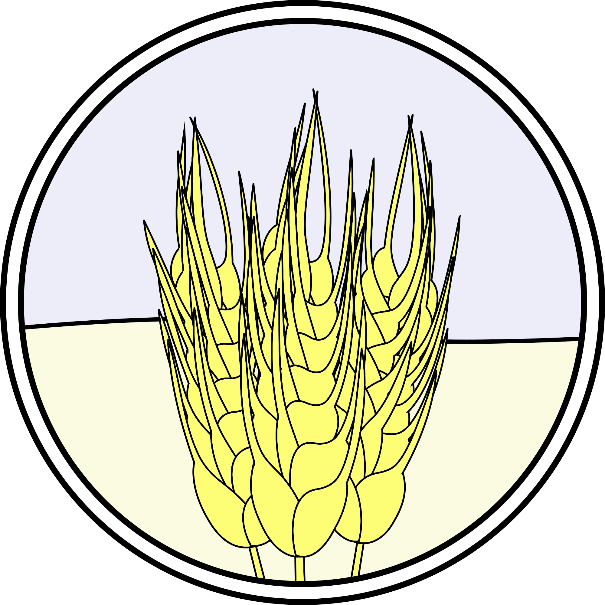

🖼️ Картинки
Колоски пшениці

Колоски пшениці — головна зернова культура Вінниччини, що займає провідне місце у сільському господарстві регіону. Саме з колосків формується врожай, який забезпечує населення хлібом та іншими продуктами.
Насінини пшениці

Насінини пшениці — основа для відтворення врожаю та виготовлення борошна. Вони містять вуглеводи, білки та вітаміни, що робить пшеницю важливим джерелом харчування.
Паросток гречки

Паросток гречки символізує початок росту культури, яка добре пристосована до кліматичних умов Вінниччини. Гречка швидко розвивається і не потребує надмірного догляду.
Гречка

Зерна гречки — цінний харчовий продукт, багатий на білки, мікроелементи та клітковину. Вони широко використовуються для приготування традиційних українських страв.
Початок кукурудзи

Початок кукурудзи — основна частина рослини, в якій формується врожай. Кукурудза є однією з найпоширеніших культур на Вінниччині, використовується і як харчовий продукт, і як корм для тварин.
Зернини кукурудзи

Зерна кукурудзи відзначаються високою поживною цінністю. Вони містять вуглеводи, білки та жири, застосовуються у харчовій промисловості, а також для виробництва круп, борошна та олії.
Гілочки овесу

Колосся вівса показує розміщення зерен у рослині; овес вирощують і як продовольчу, і як кормову культуру. Овес добре підходить для систем сівозміни й дає універсальну сировину.
Пластівці

З вівса виготовляють вівсяні пластівці — поживний продукт, багатий на клітковину й мікроелементи. Пластівці використовують для каш, мюслів та дієтичного харчування.
Соняшник

Соняшник — одна з найпоширеніших олійних культур Вінниччини. Його великі кошики містять насіння, з якого отримують цінну олію.
Соняшникове насіння

Насіння соняшнику багате на жири, вітаміни та мікроелементи. Воно використовується для виробництва соняшникової олії, а також у харчуванні як цінний продукт.
